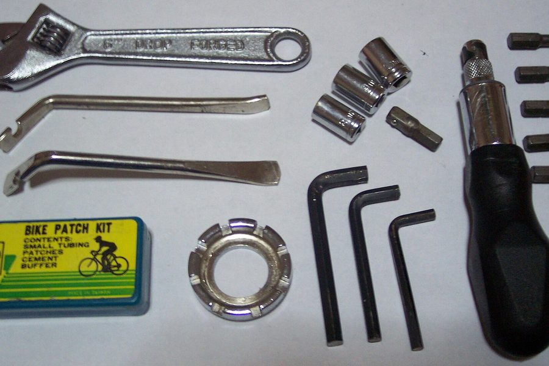
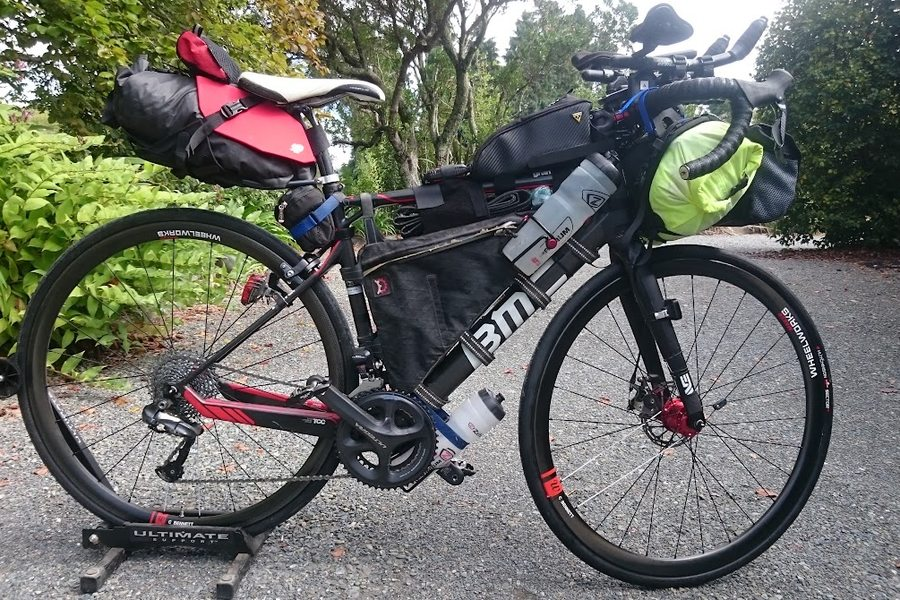

Снаряжение · личный опыт
Что беру с собой
Список собирал постепенно: что-то забывал, что-то оказывалось лишним. Сейчас набор почти не меняется, разве что воды и еды становится больше.
В рюкзаке на день
Всё помещается в небольшой рюкзак на 15 литров. Перед выездом я просто открываю его и проверяю, что ничего не выложил после прошлой поездки.
- Запасная камера и две монтажки.
- Насос с манометром.
- Мультитул: шестигранники, выжимка цепи, крестовые биты.
- Ремкомплект для камеры.
- Вода 1,5 л и один изотоник.
- Ветровка — даже если утром тепло.
- Аптечка: пластыри, бинт, обезболивающее.
- Перекус: батончики, орехи, пара бутербродов.
- Павербанк и короткий кабель.
- Трос для велосипеда.
Список прокручивается — внутри десять пунктов.
Перед выездом проверяю давление в шинах и тормоза. Минута времени, зато потом не приходится искать насос у соседей по трассе.

Пять правил, которые я вывел
-
Не стартовать на пустой желудок
Пару раз поехал в семь утра, выпив только чай. На тридцатом километре начинаешь думать не о дороге, а о бутерброде. Теперь завтракаю нормально и беру перекус.
-
Считать не километры, а время
По грунту 20 км могут занять больше времени, чем 40 по асфальту. Планирую день по часам, а не по одометру.
-
Брать воду с запасом
Даже в прохладную погоду на час езды уходит примерно 0,5 л. В краснодарском июле — литр, а то и больше. Лишний литр тяжелее, чем чувство, что вода закончилась за десять километров до дома.
-
Проверять велосипед до выезда, а не в дороге
Цепь, тормоза, крепления багажника. Один раз на ходу открутился болт крыла, больше не хочу.
-
Ехать в своём темпе
Если компания уезжает, не надо догонять любой ценой. Договоритесь о точках сбора. Испорченное настроение — тоже причина развернуться.
Если едете первый раз
Не нужно сразу покупать велокомпьютер, дорогую форму и карбоновые колёса. Для первых выездов хватит обычного велосипеда, шлема и воды. Проверьте, что удобно сидеть и ничего не трёт, — это важнее, чем количество передач.
Начните с 15–20 км по знакомому маршруту. Если после поездки хочется ещё — в следующий раз добавьте пять километров. Если нет — не страшно, значит, маршрут был не тот.
И не ставьте рекордов в первые выезды. Организм скажет спасибо на следующий день.

Вывод по работе
До этой работы я в основном прописывал стили прямо в тегах, и при добавлении второй страницы приходилось копировать одни и те же цвета и размеры. Когда собрал все правила в style.css, стало проще: поменял цвет в одном месте — обновились все три страницы. Особенно это заметно на таблице маршрутов: классы для заголовка, строк и примечания заданы один раз, а строк может быть сколько угодно. Ещё убрал из HTML лишние теги font и атрибуты bgcolor, потому что оформление теперь лежит отдельно. Классы textstyle0–textstyle4 и layer из задания оставил, но перекрасил под общий стиль, иначе блоки выбивались из остальных страниц.
Через CSS удобно делать и мелочи, которые на глаз не заметны: отступы, ширину колонок, поведение ссылок при наведении. Пока проверял сайт, несколько раз менял палитру, и это заняло минуты, а не часы. Минус тоже есть: без комментариев в большом файле стилей легко запутаться, поэтому основные блоки я подписал. В целом CSS экономит время и помогает держать одинаковый вид страниц, особенно когда их больше двух. Теперь понимаю, почему стили выносят в отдельный файл.